# Cloud Computing Architecture & Deployment <!-- .element: class="subtitle" --> **Notes:** Learn what cloud computing is and about the common service models available today. **References:** - [Advantages and Disadvantages of Virtual Server](https://www.esds.co.in/kb/advantages-and-disadvantages-of-virtual-server/) - [Microservices in Practice](https://medium.com/microservices-in-practice/microservices-in-practice-7a3e85b6624c) --- ## Client-server model <!-- .element: class="hidden" --> <p>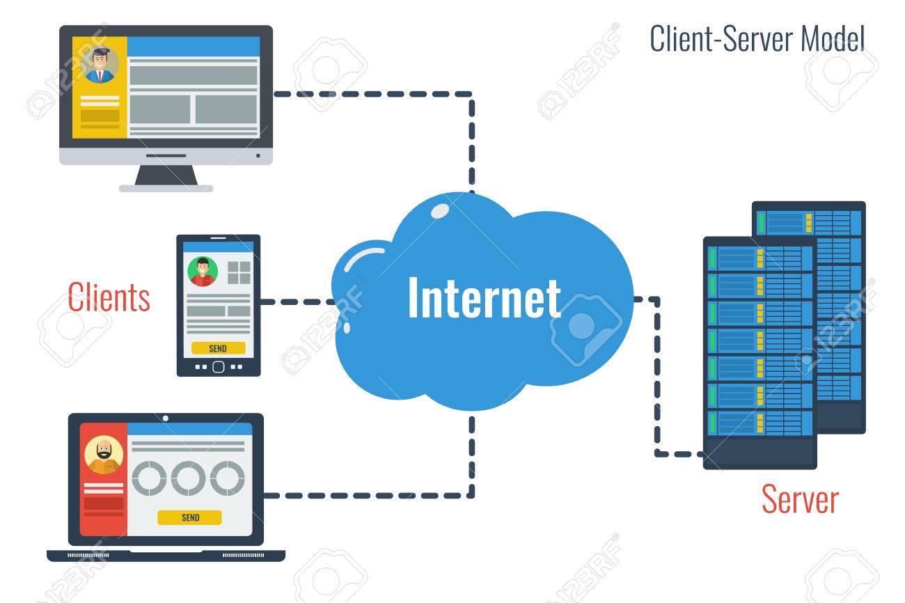</p> **Notes:** The [client-server model](https://en.wikipedia.org/wiki/Client%E2%80%93server_model) is one of the main ways distributed and networked computer systems are organized today. In this model, **servers** share their resources with **clients**, who **request a server's content or services**. The communication is not only one way. In modern web applications, servers may also **push data to their clients**. --- ### Server-side <p>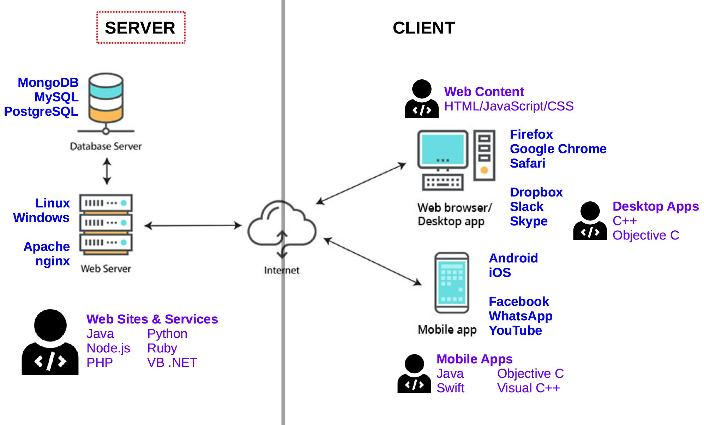</p> **Notes:** The **server** is what we will focus on. --- ### Servers, servers everywhere... <div class='flex justify-center gap-8'> </div> **Notes:** A server can provide many different kinds of content or services: - A [**file server**](https://en.wikipedia.org/wiki/File_server) provides shared disk access accessible over the network (using protocols such as [FTP](https://en.wikipedia.org/wiki/File_Transfer_Protocol) or [AFP](https://en.wikipedia.org/wiki/Apple_Filing_Protocol)), to store files such as text, image, sound or video. - A [**database server**](https://en.wikipedia.org/wiki/Database_server) houses an application that provides database services to other computer programs. - A [**web server**](https://en.wikipedia.org/wiki/Web_server) can serve contents over the Internet (using [HTTP](https://en.wikipedia.org/wiki/HTTP)). These are just a few examples. There are many [types of servers](https://en.wikipedia.org/wiki/Server_(computing)#Purpose) depending on the scenario and the resources you want to provide. One computer may fulfill one or several of these roles. --- ### Internet hosting <!-- .element: class="hidden" --> **Notes:** Not every individual and organization has access to vast computer resources. Some companies provide [Internet hosting](https://en.wikipedia.org/wiki/Internet_hosting_service): servers that can be owned or leased by customers. One common example is [web hosting](https://en.wikipedia.org/wiki/Web_hosting_service), where server space is provided to make websites accessible over the Internet. --- #### Shared hosting <p>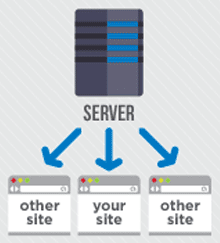</p> **Notes:** With [**shared hosting**](https://en.wikipedia.org/wiki/Shared_web_hosting_service), multiple websites (from a few to a few hundred) are placed on the same server and **share a common pool of resources** (e.g. CPU, RAM). This is the least expensive and least flexible model. --- #### Dedicated hosting <p>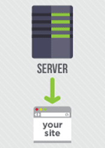</p> **Notes:** With [**dedicated hosting**](https://en.wikipedia.org/wiki/Dedicated_hosting_service), customers get full control over their own **physical server(s)**. They are responsible for the security and maintenance of the server(s). This offers the most flexibility and best performance. --- #### Virtual hosting <p>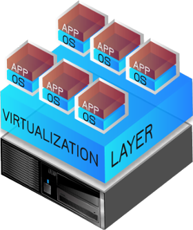</p> **Notes:** With [**virtual hosting**](https://en.wikipedia.org/wiki/Virtual_private_server), using [virtualization](https://en.wikipedia.org/wiki/Virtualization), physical server resources can be divided into **virtual servers**. Customers gain full access to their own virtual space. --- ### Virtualization <p>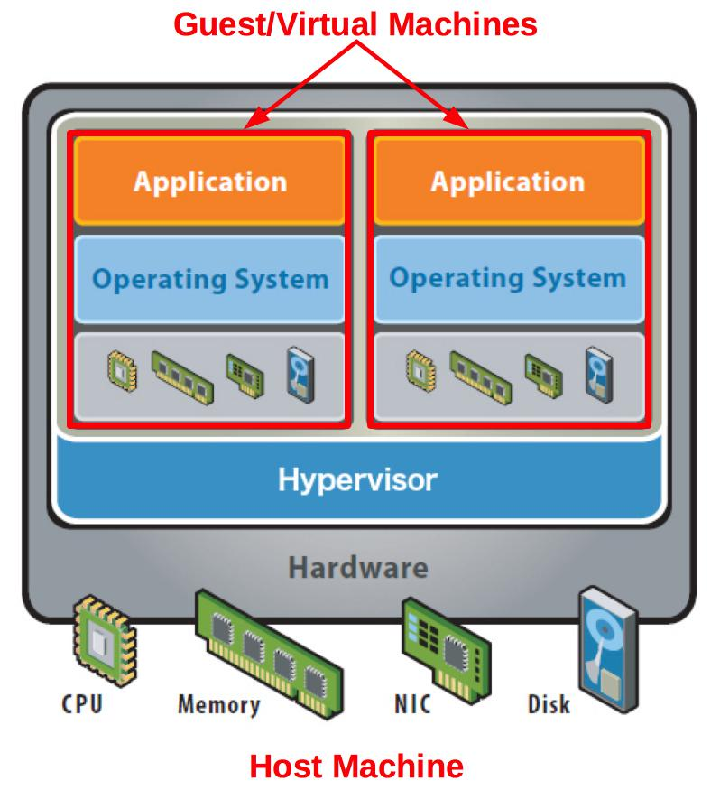</p> **Notes:** **Hardware [virtualization](https://en.wikipedia.org/wiki/Virtualization)** refers to the creation of a **virtual machine** that acts like a real computer with an operating system. A [**hypervisor**](https://en.wikipedia.org/wiki/Hypervisor) is installed on the **host machine**. It virtualizes CPU, memory, network and storage. A virtual machine, also called the **guest machine**, runs another operating system **isolated** from the host machine. For example, a computer running Microsoft Windows may host a virtual machine running an Ubuntu Linux operating system. Ubuntu-based software can be run in the virtual machine. > Popular virtualization solutions: [KVM](https://www.linux-kvm.org), [Parallels](https://www.parallels.com), > [VirtualBox](https://www.virtualbox.org), [VMWare](https://www.vmware.com). --- #### Virtualized server architecture <p>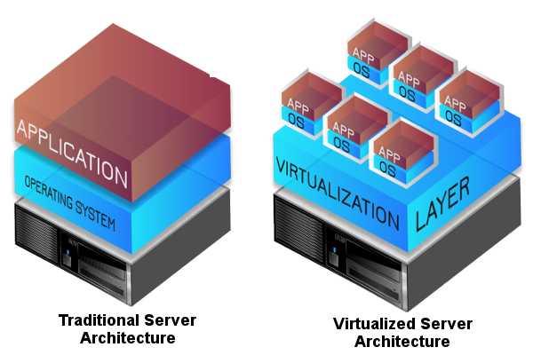</p> **Notes:** Using virtual machines provides several advantages: applications can each run in an **isolated environment** custom-tailored to their needs (operating system, libraries, etc), **new virtual servers can be created in minutes**, and **resource utilization is maximized** instead of hardware running idle. On the other hand, virtual machines require **additional management effort** and their **performance is not as good** as dedicated servers. But for many use cases **the benefits outweight the costs**, which is why virtualization is heavily used in cloud computing. --- ## Cloud computing <p>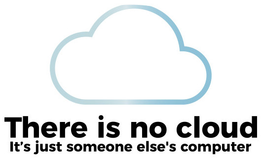</p> --- ### What is cloud computing? <p>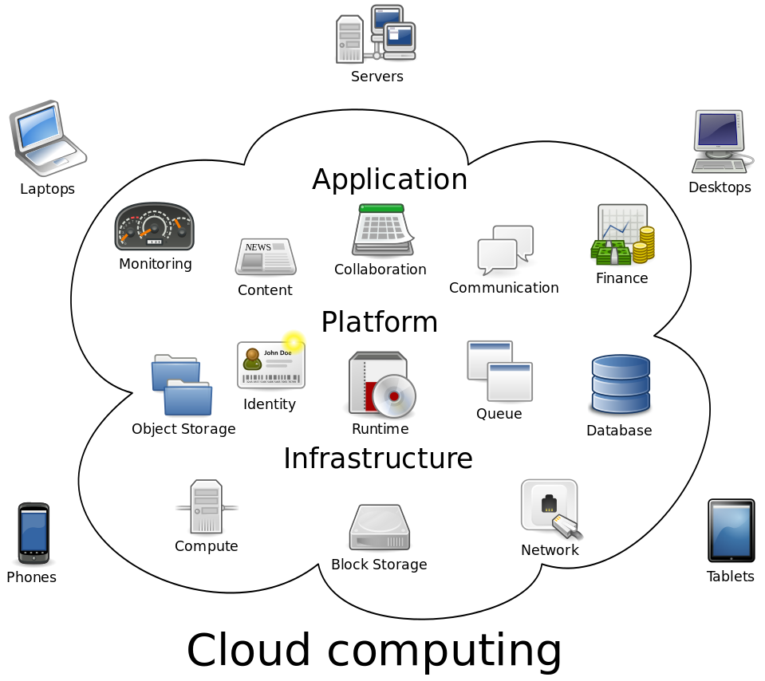</p> **Notes:** [Cloud computing](https://en.wikipedia.org/wiki/Cloud_computing) is nothing new. It's simply a **pool of configurable computer system resources**. These resources may be **servers**, or **infrastructure** for those servers (e.g. network, storage), or **applications** running on those servers (e.g. web applications). --- ### Why use cloud computing? <div class='grid grid-cols-2 gap-4'> <div> <ul class="text-3xl"> <li>Focus on core business</li> <li>Minimize up-front computer infrastructure costs</li> <li>Rapidly adjust to fluctuating and unpredictable computing demands</li> </ul> </div> <div> <ul class="text-3xl"> <li>Customization options are limited</li> <li>Security and privacy can be a concern</li> </ul> </div> </div> **Notes:** Cloud computing resources can be **rapidly provisioned** with **minimal management** effort, allowing great **economies of scale**. Companies using cloud computing can **focus on their core business** instead of expending resources on computer infrastructure and maintenance. --- ### Deployment models <div class="grid grid-cols-2 gap-8 text-3xl"> <div> <p>Cloud infrastructure operated solely for a single organization</p> </div> <div> <p>Cloud services open for public use, provided over the Internet</p> </div> </div> **Notes:** Cloud infrastructure operated solely **for a single organization**, managed and hosted internally or by a third party. These clouds are very capital-intensive (they require physical space, hardware, etc) but are usually more customizable and secure. **Providers:** Microsoft, IBM, Dell, VMWare, HP, Cisco, Red Hat Cloud services **open for public use**, provided over the Internet. Infrastructure is often shared through virtualization. Security guarantees are not as strong. However, costs are low and the solution is highly flexible. **Platforms:** [Amazon Web Services](https://aws.amazon.com), [Google Cloud Platform](https://cloud.google.com), [Microsoft Azure](https://azure.microsoft.com) --- ### Hybrid clouds <p>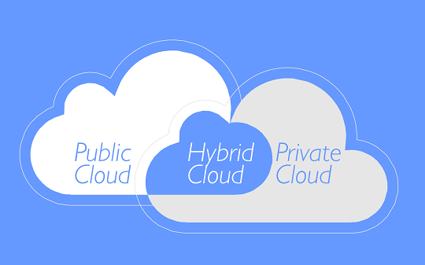</p> **Notes:** There are also **hybrid clouds** composed of two or more clouds bound together to benefit from the advantages of multiple deployment models. For example, a platform may store sensitive data on a private cloud, but connect to other applications on a public cloud for greater flexibility. --- ### Distributed clouds <p>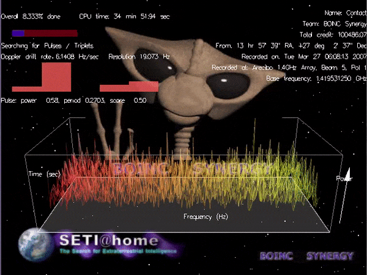</p> **Notes:** There also are a few [other deployment models](https://en.wikipedia.org/wiki/Cloud_computing#Others), for example **distributed clouds** where computing power can be provided by volunteers donating the idle processing resources of their computers. For example, [SETI@home](https://en.wikipedia.org/wiki/SETI@home) uses volunteers' computers to analyze radio signals with the aim of searching for signs of extraterrestrial intelligence. Also see [Science United](https://scienceunited.org) for more recent projects. --- ### Public clouds **Notes:** Most public **cloud computing providers** such as Amazon, Google and Microsoft **own and operate the infrastructure** at their data center(s), and **provide cloud resources via the Internet**. For example, the [Amazon Web Services](https://aws.amazon.com) cloud was [initially developed internally](https://en.wikipedia.org/wiki/Amazon_Web_Services#History) to support Amazon's retail trade. As their computing needs grew, they felt the need to build a computing infrastructure that was **completely standardized and automated**, and that would **rely extensively on web services** for storage and other computing needs. As that infrastructure grew, Amazon started **selling access to some of their services**, initially virtual servers, as well as a storage and a message queuing service. Today Amazon is one of the largest and most popular cloud services provider. --- ## Service models <p>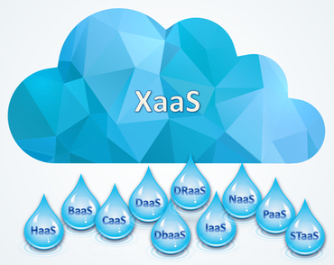</p> --- ### What can I get? <table class="text-2xl"> <thead> <tr> <th>Model</th> <th>Acronym</th> <th>What is provided</th> <th>Examples</th> </tr> </thead> <tbody> <tr> <td>Infrastructure as a Service</td> <td><strong><code>IaaS</code></strong></td> <td>Virtual machines, servers, storage, load balancers, network</td> <td><a href="https://aws.amazon.com">Amazon Web Services</a>, <a href="https://cloud.google.com">Google Cloud</a>, <a href="https://azure.microsoft.com">Microsoft Azure</a></td> </tr> <tr> <td>Platform as a Service</td> <td><strong><code>PaaS</code></strong></td> <td>Execution runtime, database, web server, development tools</td> <td><a href="https://www.cloudfoundry.org">Cloud Foundry</a>, <a href="https://www.heroku.com">Heroku</a>, <a href="https://www.openshift.com">OpenShift</a>, <a href="https://render.com">Render</a></td> </tr> <tr> <td>Function as a Service</td> <td><strong><code>FaaS</code></strong></td> <td>Event-based hosting of individual functions</td> <td><a href="https://aws.amazon.com/lambda/">AWS Lambda</a>, <a href="https://azure.microsoft.com/en-us/services/functions/">Azure Functions</a>, <a href="https://cloud.google.com/functions/">Cloud Functions</a></td> </tr> <tr> <td>Software as a Service</td> <td><strong><code>SaaS</code></strong></td> <td>Web applications such as CMS, email, games</td> <td><a href="https://www.dropbox.com">Dropbox</a>, <a href="https://www.google.com/gmail/">Gmail</a>, <a href="https://slack.com">Slack</a>, <a href="https://wordpress.com">WordPress</a></td> </tr> </tbody> </table> --- ### On premise data center <!-- .element: class="hidden" --> <div class='grid grid-cols-2 gap-8'> <div class='flex justify-end'> <p>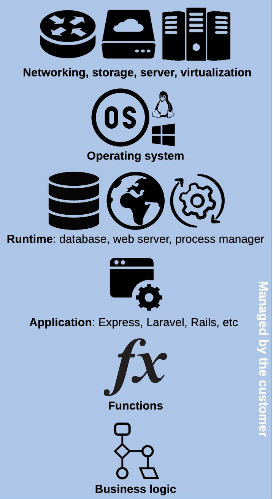</p> </div> <div class='flex flex-col justify-center text-left'> <p><strong>On premise<br />data center</strong></p> <p class='text-3xl'>Do everything yourself<br />(in your basement)</p> </div> </div> **Notes:** As an introduction to cloud service models, this is a representation of the various technological layers you need to put in place to deploy web applications in a modern cloud infrastructure. If you have your own data center, you need to install and configure all of these layers yourself. As you will see, the various **cloud service models abstract away part or all** of these layers, so that you don't have to worry about them. --- ### Infrastructure as a Service (IaaS) <!-- .element: class="hidden" --> <div class='grid grid-cols-2 gap-8'> <div class='flex justify-end'> <p>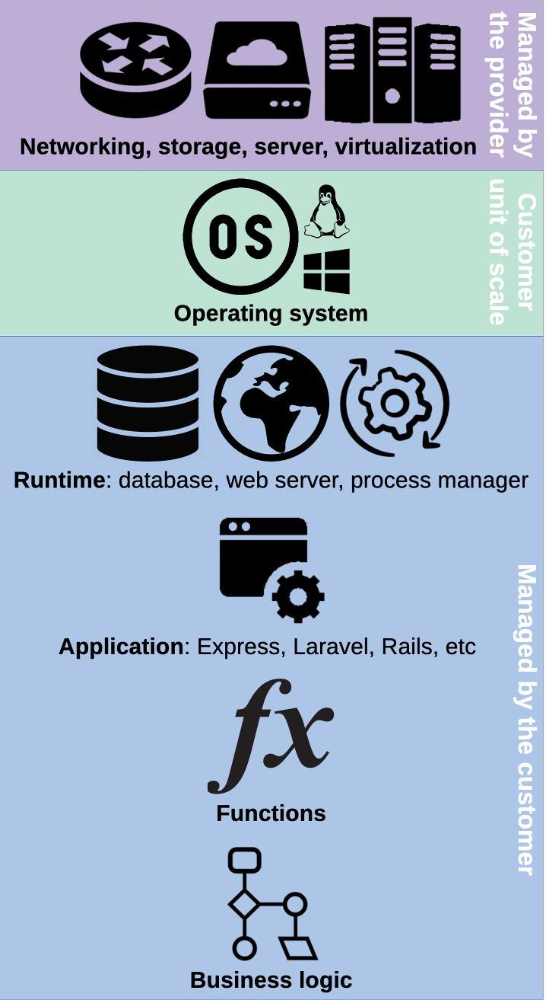</p> </div> <div class='flex flex-col justify-center text-left'> <p><strong>Infrastructure<br />as a service</strong></p> <p class='text-3xl'>Pay per machine</p> <ul class='text-2xl'> <li> $6/mo for a 2-<a href='https://www.techtarget.com/whatis/definition/virtual-CPU-vCPU'>vCPU</a> VM with 1 GB of RAM at <a href='https://aws.amazon.com/ec2/pricing/on-demand/'>AWS EC2</a> </li> <li> €17/mo for a dedicated server with a 2.2 GHz CPU and 32 GB of RAM at <a href='https://eco.ovhcloud.com'>OVH</a> </li> </ul> </div> </div> **Notes:** [**IaaS**](https://en.wikipedia.org/wiki/Infrastructure_as_a_service) provides IT infrastructure like **storage, networks and virtual machines** from the provider's data center(s). The customer provides an **operating system image** like [Ubuntu](https://www.ubuntu.com), which is run on a physical or [virtual machine (VM)](https://en.wikipedia.org/wiki/Virtual_machine) by the provider. The machine is the **unit of scale**: you pay per machine (usually hourly). The customer does not manage the physical infrastructure but has **complete control over the operating system** and can run arbitrary software, assuming the role of a system administrator. **Setting up the runtime** environment (databases, web servers, monitoring, etc) for applications **is up to the customer**. --- ### Platform as a Service (PaaS) <!-- .element: class="hidden" --> <div class='grid grid-cols-2 gap-8'> <div class='flex justify-end'> <p>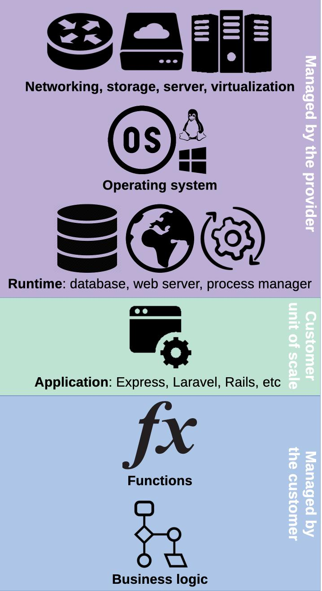</p> </div> <div class='flex flex-col justify-center text-left'> <p><strong>Platform as<br />a service</strong></p> <p class='text-3xl'>Pay per application</p> <ul class='text-2xl'> <li> $25/mo for a fully managed production environment with 1 GB or RAM at <a href='https://www.heroku.com/pricing'>Heroku</a> </li> </ul> </div> </div> **Notes:** [**PaaS**](https://en.wikipedia.org/wiki/Platform_as_a_service) provides a **managed runtime environment** where customers can run their applications without having to maintain the associated infrastructure. All you have to do is provide the **application**, typically via Git. The platform will detect the type of application and run it with the necessary components (e.g. database). You pay per application, often hourly. This is **quicker** because applications can be deployed with minimal configuration, without the complexity of setting up the runtime. More time can be spent on developing the application. However PaaS is **less flexible** since control of the runtime is limited. It also tends to be more expensive at larger scales. > $25/mo for a fully managed production environment with 1 GB or RAM at > [Heroku][heroku-pricing]. --- ### Function as a Service (FaaS) <!-- .element: class="hidden" --> <div class='grid grid-cols-2 gap-8'> <div class='flex justify-end'> <p>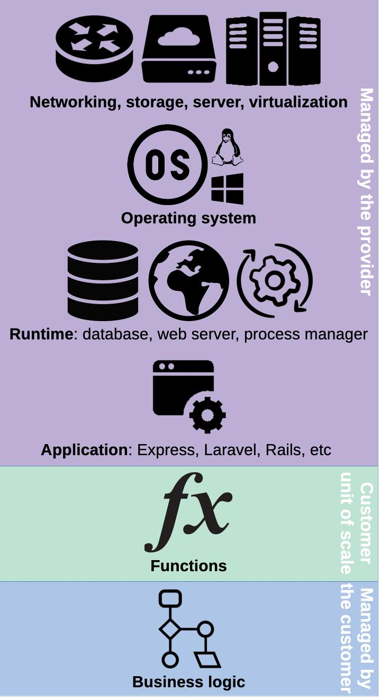</p> </div> <div class='flex flex-col justify-center text-left'> <p><strong>Function as<br />a service</strong></p> <p class='text-3xl'>Pay per execution time</p> <ul class='text-2xl'> <li> $0.0000000021/ms when a function consumes 128 MB of RAM at <a href='https://aws.amazon.com/lambda/'>AWS Lambda</a> </li> </ul> </div> </div> **Notes:** [**FaaS**](https://en.wikipedia.org/wiki/Function_as_a_service) stores **individual functions** and runs them in response to events. Customers write simple functions that access resources such as a database, then define when they are run in response to client requests. This model completely abstracts away the complexity of managing the infrastructure, setting up the runtime and structuring an application. The customer has little to no control over these layers. There is no direct need to manage resources. In contrast with IaaS and PaaS, nothing is kept running if nothing happens. Functions are loaded and run as events occur. **Pricing is based on execution time** (often per millisecond) rather than application uptime. --- ### Software as a Service (SaaS) <!-- .element: class="hidden" --> <div class='grid grid-cols-2 gap-8'> <div class='flex justify-end'> <p>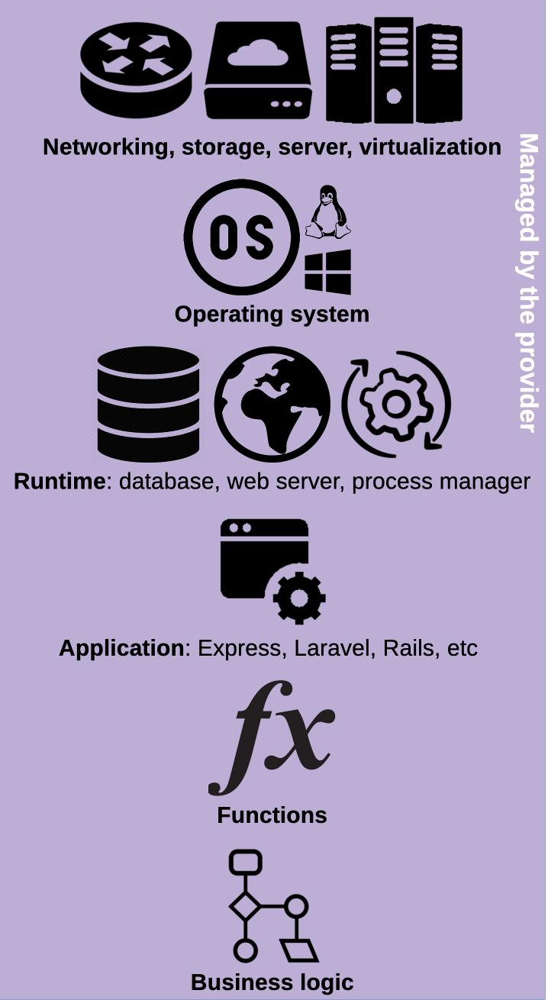</p> </div> <div class='flex flex-col justify-center text-left'> <p><strong>Software as<br />a service</strong></p> <p class='text-3xl'>Pay a monthly subscription</p> <ul class='text-2xl'> <li> $4/mo for a <a href='https://github.com/pricing'>pro GitHub account</a> </li> <li> $10/mo for a <a href='https://www.dropbox.com/official-teams-page'>personal Dropbox account</a> </li> <li> $14/mo for a <a href='https://www.youtube.com/premium'>premium YouTube account</a> </li> </ul> </div> </div> **Notes:** [**SaaS**](https://en.wikipedia.org/wiki/Software_as_a_service) provides **on-demand** software over the Internet. The software is **fully developed, managed and run by the provider**, so the customer has nothing to do except pay and use it. Pricing is often per user and monthly. This model offers the **least flexibility**, as the customer has no control over the operation or deployment of the software, and limited control over its configuration. --- ### Level of abstraction <p>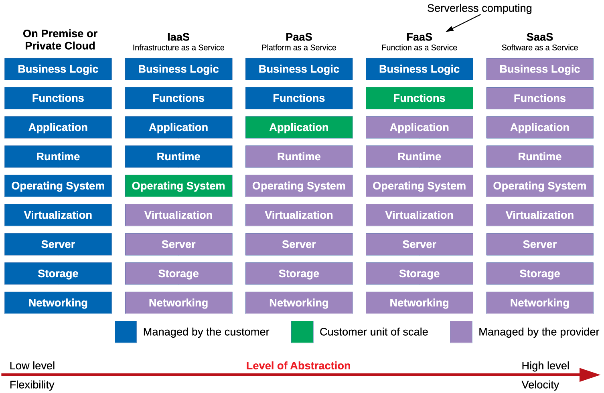</p> **Notes:** These models can be ordered by increasing level of abstraction, from IaaS being the lowest level and most flexible service model, to SaaS being the highest level and fastest-to-use service model. [afp]: https://en.wikipedia.org/wiki/Apple_Filing_Protocol [app-server]: https://en.wikipedia.org/wiki/Application_server [aws]: https://aws.amazon.com [aws-history]: https://en.wikipedia.org/wiki/Amazon_Web_Services#History [azure]: https://azure.microsoft.com [azure-functions]: https://azure.microsoft.com/en-us/services/functions/ [cd]: https://en.wikipedia.org/wiki/Continuous_delivery [client-server-model]: https://en.wikipedia.org/wiki/Client%E2%80%93server_model [cloud]: https://en.wikipedia.org/wiki/Cloud_computing [cloud-foundry]: https://www.cloudfoundry.org [cloud-functions]: https://cloud.google.com/functions/ [db-server]: https://en.wikipedia.org/wiki/Database_server [dedicated-hosting]: https://en.wikipedia.org/wiki/Dedicated_hosting_service [dropbox]: https://www.dropbox.com [faas]: https://en.wikipedia.org/wiki/Function_as_a_service [file-server]: https://en.wikipedia.org/wiki/File_server [ftp]: https://en.wikipedia.org/wiki/File_Transfer_Protocol [gmail]: https://www.google.com/gmail/ [google-cloud]: https://cloud.google.com [heroku]: https://www.heroku.com [http]: https://en.wikipedia.org/wiki/HTTP [hypervisor]: https://en.wikipedia.org/wiki/Hypervisor [iaas]: https://en.wikipedia.org/wiki/Infrastructure_as_a_service [internet-hosting]: https://en.wikipedia.org/wiki/Internet_hosting_service [kvm]: https://www.linux-kvm.org [microservices-in-practice]: https://medium.com/microservices-in-practice/microservices-in-practice-7a3e85b6624c [openshift]: https://www.openshift.com [other-deployment-models]: https://en.wikipedia.org/wiki/Cloud_computing#Others [paas]: https://en.wikipedia.org/wiki/Platform_as_a_service [parallels]: https://www.parallels.com [render]: https://render.com [saas]: https://en.wikipedia.org/wiki/Software_as_a_service [science-united]: https://scienceunited.org [server-types]: https://en.wikipedia.org/wiki/Server_(computing)#Purpose [serverless]: https://en.wikipedia.org/wiki/Serverless_computing [seti]: https://en.wikipedia.org/wiki/SETI@home [shared-hosting]: https://en.wikipedia.org/wiki/Shared_web_hosting_service [slack]: https://slack.com [soa]: https://en.wikipedia.org/wiki/Service-oriented_architecture [ubuntu]: https://www.ubuntu.com [virtualbox]: https://www.virtualbox.org [virtual-hosting]: https://en.wikipedia.org/wiki/Virtual_private_server [virtualization]: https://en.wikipedia.org/wiki/Virtualization [vm]: https://en.wikipedia.org/wiki/Virtual_machine [vmware]: https://www.vmware.com [web-hosting]: https://en.wikipedia.org/wiki/Web_hosting_service [web-server]: https://en.wikipedia.org/wiki/Web_server [wordpress]: https://wordpress.com
GitHub
Backup copy